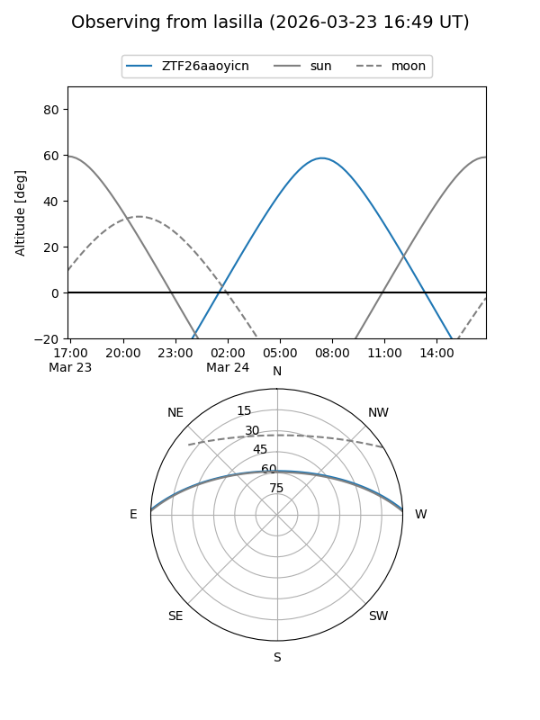
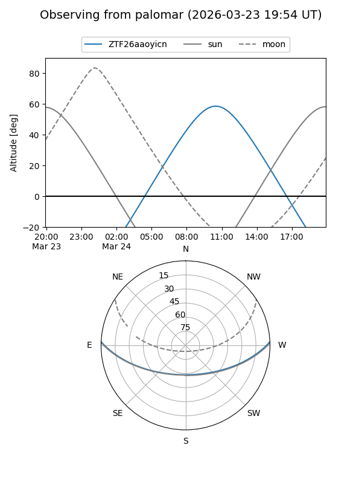

ZTF26aaoyicn
Target ZTF26aaoyicn at 2026-03-23 12:29
Aliases and brokers:
FINK: link
Lasair: link
ALeRCE: link
alt names
ZTF26aaoyicn (ztf,fink_ztf)
Coordinates:
equatorial (ra, dec) = 221.9348,+2.13513
equatorial (HMS+DMS) = 14:47:44.36,+02:08:06.48
galactic (l, b) = (355.9964,+52.58744)
Flags:
Photometry:
last ztfg=18.74
1 ztfg detections
Lightcurve
Visibility


Additional plots